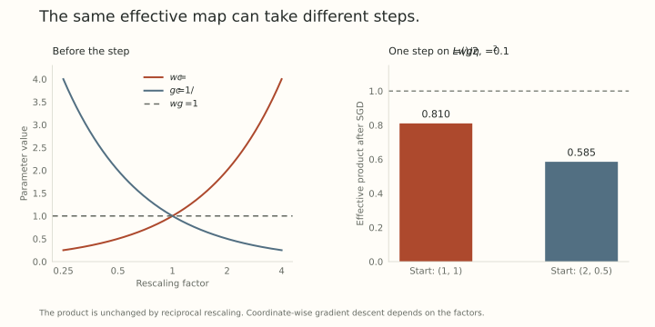

We have spent several posts trying to control scale. Now consider a different possibility: some scales are part of what the model needs to learn.
A normalized activation can remove one common magnitude. A residual branch can still need to change its strength relative to the skip path. Attention scores can still need a different effective temperature. Different channels can still need different amplification.
The useful question is not whether scale is good or bad. It is which scale belongs to the function, and which is only a redundant way of writing it.
One effective matrix, two parameter blocks
Write a layer as
\[ y=A z,\qquad A=gW, \]
where \(z\) is fixed for this local calculation and \(g\) is a scalar multiplier. If \(W\) is constrained to Frobenius radius \(R\), then
\[ \lVert A\rVert_F=|g|R. \]
Fixing \(W\)’s radius has not fixed the forward amplitude when \(g\) remains learnable. For any nonzero target matrix \(A\), choose \(g=\lVert A\rVert_F/R\) and \(W=A/g\). Every such target still has a representative.
This is a single-matrix representation argument. It does not establish that a shared gain can absorb independently chosen scales for many matrices.
With row and column multipliers, the effective map is
\[ A=\operatorname{diag}(r)W\operatorname{diag}(c). \]
These scales can change the distribution of amplification across output and input channels. They are not just another name for one global radius.
Follow the differential through the multiplier
Let \(G=\partial L/\partial A\) in the usual matrix pairing. For the scalar form \(A=gW\), the chain rule gives
\[ \frac{\partial L}{\partial W}=gG, \qquad \frac{\partial L}{\partial g}=\langle G,W\rangle_F. \]
The effective differential is
\[ \delta A=g\,\delta W+W\,\delta g. \]
Controlling the matrix update alone therefore does not control the whole forward perturbation if the multiplier or its update can grow without bound.
For a normalization gain vector, the corresponding formula is
\[ A=W\operatorname{diag}(\gamma), \qquad \delta A=\delta W\operatorname{diag}(\gamma) +W\operatorname{diag}(\delta\gamma). \]
In operator norm this implies
\[ \lVert\delta A\rVert_{\mathrm{op}} \leq\lVert\gamma\rVert_\infty\lVert\delta W\rVert_{\mathrm{op}} +\lVert W\rVert_{\mathrm{op}}\lVert\delta\gamma\rVert_\infty. \]
A modular ruler for the effective map needs to account for both contributions. Bounds on matrix motion and bounds on represented-function motion become different when a gain moves too.
Equivalent representations can still learn differently
If both factors are free, the transformation \(W\mapsto cW\), \(g\mapsto g/c\) preserves \(A\) for \(c>0\). It can also change ordinary coordinate-based training.
For scalar weights, take \(L(w,g)=(wg)^2/2\). The pairs \((1,1)\) and \((2,1/2)\) represent the same product, one. Use raw SGD with learning rate \(0.1\) for both coordinates.
At \((1,1)\), both gradients equal one. The next pair is \((0.9,0.9)\), with effective product \(0.81\).
At \((2,1/2)\), the gradients are \(1/2\) and two. The next pair is \((1.95,0.3)\), with product \(0.585\).
Both runs began with the same represented function. Their coordinate scales changed the effective update. To first order, separate learning rates give
\[ \delta A=-\eta_W g^2G-\eta_g\langle G,W\rangle_FW. \]
The finite scalar calculation also includes the product of the two parameter increments. The example is another instance of Part 1’s distinction between a function and the optimizer coordinates used to move it.

Learnable scales do not remove the need for scale management
Learnable Multipliers studies scalar and row/column forward multipliers while leaving the underlying matrices subject to decay. Its Section 4.1 discusses redundant parameter symmetries and the numerical drift they can permit. The authors use light decay on multipliers to control that drift in their experiments.
The general distinction matters more than copying a decay coefficient. A scale can be useful for the forward function, redundant in a joint parameterization, or involved in both a useful relative scale and an unstable coordinate direction.
Positive log-parameterizations can make multiplicative changes easy to express, but they change the optimizer coordinates and exclude negative gains unless signs are handled separately. Removing a redundant factor can improve identifiability, but removing an independent branch multiplier may remove a useful degree of freedom.
These are different interventions. They should be compared through the effective map, not only through whether the parameter norms look tidy.
A joint effective ruler has a kernel
There is a natural temptation to measure the tuple \((\delta W,\delta\gamma)\) by the size of \(\delta A\). That does measure the represented linear-map change. But it is generally a seminorm on the redundant parameters.
For example, the infinitesimal transformation
\[ \delta W=tW,\qquad\delta\gamma=-t\gamma \]
has nonzero parameter motion and zero effective differential. A genuine norm cannot vanish on that nonzero direction.
One can remove the redundancy by a coordinate convention, or work with equivalence classes of parameters that represent the same function. Calling a pulled-back measurement a norm without addressing its kernel skips a mathematical step.
The practical question is whether such a joint construction makes an affordable optimizer with a useful consequence. The existence of a symmetry alone does not establish that result.
Which quantities should remain available?
Before fixing a forward scale, identify the function it controls, every consumer that shares it, and the transformations that can compensate it. Then ask whether the complete collection of constraints still admits the intended functions.
This gives us a more precise goal than either freeing every multiplier or fixing every tensor norm. Control redundant coordinate drift while preserving useful relative scales. The next post turns that goal into an exact compatibility calculation for several matrices sharing one gain.
Try tracking the effective map
- A target matrix has Frobenius norm three and the underlying matrix radius is two. Give a scalar gain and matrix representative.
- In the scalar SGD example, verify the effective products \(0.81\) and \(0.585\) after one step.
- Show directly that the infinitesimal common rescaling of \(W\) and \(\gamma\) has zero \(\delta A\).
Answer sketches
- Choose \(g=3/2\) and \(W=2A/3\). Then \(gW=A\) and \(\lVert W\rVert_F=2\).
- The gradients of \((wg)^2/2\) are \(g(wg)\) and \(w(wg)\). Substitute each starting pair, apply the two coordinate updates, and multiply the new factors.
- Substitute into the differential: \(tW\operatorname{diag}(\gamma)-tW\operatorname{diag}(\gamma)=0\).
Yo twin, go read…
Maksim Velikanov and collaborators, Learnable Multipliers: Freeing the Scale of Language Model Matrix Layers, Sections 2 and 4.1 and Appendix C, studies multiplier placement, redundant symmetries, and their practical management.
Twan van Laarhoven, L2 Regularization versus Batch and Weight Normalization, and Li and Arora’s trajectory analysis, give the earlier scale-to-dynamics context. The parameter-pair examples and effective differential here follow directly from the displayed maps.